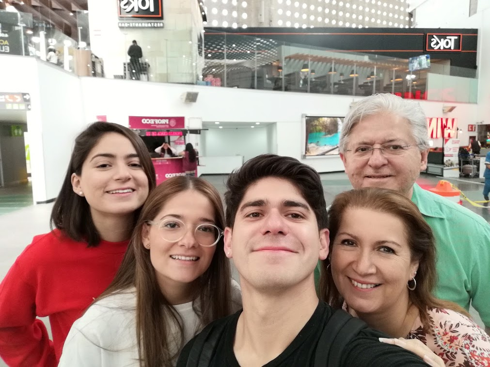
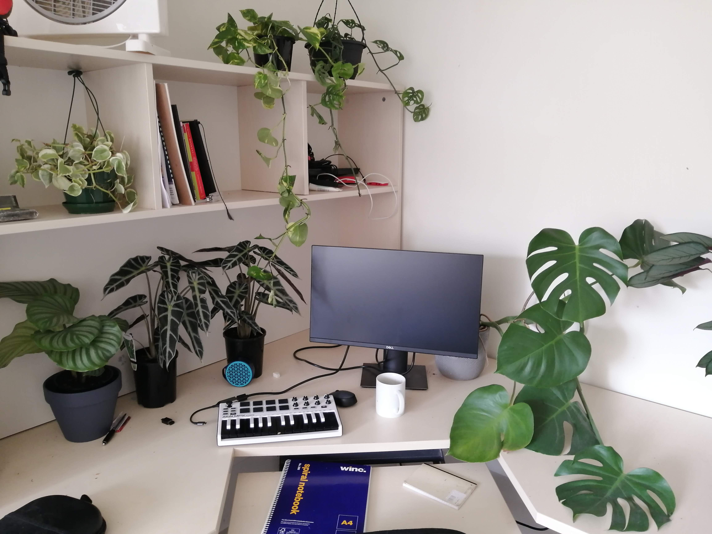
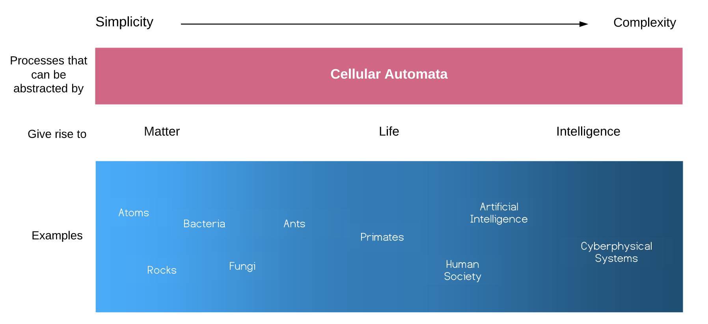

Introduction
Note: this is a story of my learning journey for a build course. I have included images, video, music and web experiences to create an interactive experience. Click around!
When I started the writing about this learning journey, I only went back to Week 0 of the course. I soon realized that Gregory Bateson would not be very proud of me: things don't really start where you think they start. There is a context and there is a past. So I tried to make sense of mine, assuming its inevitable incompleteness, by going back to the other side of the world, to Mexico City.
Beautiful afternoon in Mexico City
This is where I grew up. A city that I only recently began to understand. In its complexity, I find reflections of myself. Now, from a distance, I see how its forests crafted my fascination with the natural world. I see how growing up in an urban environment made me slightly anthropocentric. I see how exposure to inequality, made me interested in understanding people and the systems in which they exist. In that cultural melting pot, where ruins of ancient Aztec Temples exist alongside 7-Elevens, I see my passion for art, both as an end and a tool.
A typical street snack stand (I'm craving some of those)
In this city, I have created the most significant relationships and had the most influential conversations. Through my social groups, I am a part of a shared set of values that influence my behavior. When understanding a learning journey, which is, in essence, behavior, one needs to understand those shared value networks. How?
One of the last nights in Mexico City, playing Son Jarocho with "me mates". I remember listening to a podcast featuring G. Bell on my way there
For me, part of the answer lies on a project that started as an idea between two friends. We shared the belief that data opened an unprecedented opportunity to understand social problems better, and provide useful tools to solve them. To that end, we founded Datalab ITAM a student run lab where undergrads learn and use data science for social good. So far, the lab has worked on diverse projects and has trained dozens of interdisciplinary undergraduates on data skills. The last project I worked at the lab, after having graduated, was an art installation that used machine learning to bring attention to the issue of mass disappearances in Mexico by showing visitors a missing person similar to them. The project planted in me a seed at the intersection of technology, art and people
A user being shown a very similar missing person to him
Ma', I'm joining a cult
The seed, nurtured by a contextual pot, eventually sprouted into a decision that surely surprised some people. "Mom, I'm quitting my job at Google to travel to Australia and join a cult led by a red-haired anthropologist."

Me and my family at the airport
After boarding a 1000-hour flight to Canberra, here I am: a master's student at the 3Ai institute. In a new country on the other side of the world, where sightings of kangaroos are much more common than I had expected. Oh yes, and also in the middle of a pandemic. Suddenly, I had all of this time alone, which I have split almost equally between Canberra's outdoors and my computer screen. The world stopped and all I could do was learn.
Mostly, I have been learning about something that we call a new branch of engineering. We don't exactly know what it is yet, but my best take at a one-sentence summary is: "things are always more complicated than you think". Everything exists across different domains and more importantly, everything is part of a system. We focus on technological ones and particularly a subset called cyberphysical systems. These are made of networked computers which sense and control physical processes. Self-driving cars, smart electrical grids and ecological monitoring sort of stuff. But they are not only made of wires and circuits, they interact across technical, social, political, ecological and ethical dimensions forming complex feedback loops.
How do we unpack this complexity? Fortunately, we are not the first ones to ask. Norbert Wiener, fellow Mexican Arturo Rosenblueth, Margert Mead and a few others came up with a few ideas in the 40's. What resulted became the foundations of cybernetics, the science control and communication in the animal and the machine. This science looks at the world as a set of interconnected systems, with feedback loops that give rise to the emergence of complex behavior. These systems are everywhere: in our physiology, the biosphere or the internet. They exist wherever there is a form of control and feedback. With the rise of artificial intelligence, a door is opened to a new class of system: autonomous digital computers that control the physical world around us: cities, ecosystems and our bodies. Those are the systems we focus on at 3Ai.
A good way to study cyberphysical systems is to build them. We even have a whole course about it (which we call Build). Tutors guide us through fortnightly projects while giving us freedom to direct our own learning journey. Therefore, every student has a different one. This is mine.
Musical experiments
One type of system that I am interested in is autonomous music generation. We can imagine a system that autonomously composes music, optimizing towards personalized user preferences. It would need a way to acquire user's feedback in the physical world. This could be a button, or an electronic dopamine sensor in the brain. In both cases, the user and the system influence each other in an intricate loop that exists across domains beyond electrical circuits, raising questions around human behavior, culture, aesthetics, artistic creation and biological reward mechanisms.
For my first semester's final project, I set out to build a very basic prototype of an automatic music generator. My objective was to create some sort of experience in the browser that could generate music using user's feedback. To do that, I had to learn a bunch of stuff. First, I started with music theory. I have been playing music since a young age, but I did not know the theory behind composing a song. My introduction was this amazing 30 minute music theory crash course by Andrew Huang, which gave me a good foundation for self-directed learning through different online resources. I also studied Adam Neely's great content and became inspired by his talk about the relationship between visual and auditory consonance, which motivated me to include a visual component to my prototype.
I realized that the best way to learn about the theory of making a song was to actually make one. So I grabbed a little MIDI keyboard I brought from Mexico and recorded a full song.

Recording studio
My friends encouraged me to upload it to Spotify so now it's there (yes, that is a photo from one of my many Canberra bicycle rides and yes, I made up a nom de plume). Play it below!
Musical Cybernetics
The second step was to learn how to make music with code. I learned about the Musical Instrument Digital Interface (MIDI) standard in detail. I also started exploring the creation of music with code. I initially focused on Python. My exploration was a bit messy but very fun and I documented most of it in this in a Jupyter notebook
This exploration also had the intention of increasing my Python level, which was achieved. The next step was to learn about Magenta, an open source project by Google which contains the state-of-the-art machine learning models for music generation. I read around 50% of Alexandre DuBreuil's great book Hands-On Music Generation with Magenta. Initially, I played with the Python library , but since I am interested in creating a web experience for my prototype, I moved to the JavaScript API , also covered in the book. With that knowledge, I created an AI Chiptune Radio, which generates endless, never repeating songs (make sure to pause the Spotify player before playing this!).
AI CHIPTUNE RADIO
Endless stream of real-time computer-generated retro-futuristic chiptune music. It's all generated here, in your browser, uniquely for you, using a neural network called variational auto encoder.
Here, the only "feedback" received by the user is the adjustment of tempo. It is still very primitive, but it was a good first step.
Browser Experiments
Playing with magenta.js led me to become more interested in JavaScript and its possibilities for fun interactions in the browser. I created a few web experiments that explore some cybernetic concept, like randomness, agency, initial conditions, feedback loops and entropy. This website, itself, is one of those experiments. I created all of it from scratch using only JavaScript, CSS and HTML. Try the experiments below!Color experiment
Cybernetic Concepts: randomness, agency, initial conditions
If you tap the screen or move your mouse around, you will see that the color changes accordingly. Try to find your favorite. You will start to notice patterns, but you will also notice that your options are limited. One of the three components that determine a color was set randomly and remains fixed. The other two can be manipulated with the X and Y coordinates of your screen tap or cursor. But wait! You can roll the dice again to change your fixed variable for a new random number. If you want to find your favorite color, when will you decide to roll vs. keep with your options? How do you navigate between randomness and agency?
The taco game experiment!
Concepts: feedback loops, reward mechanisms
Press the following button and the word "taco" will be randomly inserted somewhere in the text. If you find one, click it to earn a point. It's hard, but don't desist! The victory high is worth it.
Why?
This game illustrates how our dopamine reward system is closely coupled with our ability to distinguish signal from noise. Here, my website's text is the noise and the taco is your signal. I suspect that such a signal-reward mechanism is closely related to our enjoyment of music. As Laura Ferreri, et al, wrote in the 2019 paper "Dopamine modulates the reward experiences elicited by music": "Understanding how the brain translates a structured sequence of sounds, such as music, into a pleasant and rewarding experience is a fascinating question which may be crucial to better understand the processing of abstract rewards in humans." Behavior is driven by reward systems. Systems that are cybernetic and that become a part of cyberphysical systems.
The chaotic taco game!
Concepts: feedback loops, reward mechanism, randomness, chaos, entropy
Same game, but now the website text will be random nonsense blob of characters, except for the word 'taco'. Is finding the taco easier?
Putting it into action
I put some skills showcased above into action for one of our assignments, where we were tasked with building a data visualization. I chose to add a sonic component and use a new library I started learning, Tone.js. My intention for this assignment was to interrogate our predominant visual relationship with data. After moving into cities, where acute hearing and smelling is not a crucial tool for survival, did we lose our ability to understand the world through non-visual information? What do we lose when approaching the world mainly with one sense? You can visit the experiment's website or play with it directly belowAnt attacks and prototypes
One day, as I was cycling around Lake Burley Griffin, I decided to stop and catch the view from the side of the track. Little did I know that in Australia, stepping down from your bicycle often means stepping on an ant colony. Unknowingly, I was standing on the gate of a big one, and I was not welcome. I felt a burning pain on my leg only to look down and see a bunch of meat ants, clung to my leg with little mighty jaws. As I fought to take them off, I dropped my bike which was quickly captured by the enemy.
The "incident"
I seriously considered jumping into the lake to get them off, but eventually, frantic movements did the job. Fortunately, their jaws are not strong enough to pierce the human skin in one go, so their biting served only as a warning. More importantly, it served as a lesson on collective intelligence. How did this little kind-of-dumb agents coordinate their actions so effectively protect their home. How does intelligent behavior emerge from unintelligent components? I became fascinated by ants and the concept of collective intelligence, and I soon learned that it is closely related to cybernetics. I began reading A New Kind of Science by Stephen Wolfram and became fascinated by cellular automata, a simple mathematical concept originally proposed by John von Neumann where simple components of a system interact with each other according to simple rules, at sequential time steps. After a few iterations, interesting things emerge: complexity, behavior, feedback loops and, if visualized, beautiful visual patterns. Could any cybernetic system be simulated by cellular automata? But more importantly, how can I use this for my prototype? A few days later, I came across p5.js , a great tool for creating visual art in the browser, developed by Lauren McCarthy. I started learning it mainly through Daniel Shiffman's AMAZING course.
I realized that I could combine p5.js and Tone.js to create an interactive visual, musical experience in the browser using cellular automata. Below are some of my early explorations. None of the patterns were explicitly programmed! They all emerged from simple initial states (a few initial little circles) and simple rules of interaction between them.
After this fun exploration, I went on a created my prototype, where users can define the initial conditions and rules. In cellular automata, the state of a cell depends on the state of its neighbors. You can play with the project below or go to directly to https://musical-automata.glitch.com Go on, click on the blue square to plant a seed and hit create. What happens when you change the numbers in the system rules? What happens when you plant another seed once the automaton is already running?
Emergency update: the hosting service for the project seems to be having issues so the page is not showing correctly and you cannot actually play with the project at the moment

New possibilities
This prototype achieved my initial goal of creating a generative music system that receives feedback from a user. However, I believe the music component is still far from being something enjoyable. In contrast, I believe that the visual one is much more interesting. I also think that beyond art generation, my prototype could be used as an educational tool for teaching about cellular automata, cybernetics and complex systems. At the time of writing this, I have not found an easy-to-use browser based tool for exploring cellular automata, so my hope is to share it with the academic community (and would love help with that too!).
Beyond cybernetic art
Inspired by the ideas of Stephen Wolfram, Sean Carroll and complex systems theory, I developed this little diagram for my own understanding.
There are many things that can be studied along the blue continuum, and one of particular interest during the course was Artificial Intelligence. Here, I will show two of the assignments related to it.
Artificial Intelligent game-playing agents
One of the main ways in which AI is being developed is through the creation of game playing agents that are able to exhibit some form of intelligent behavior. We were tasked with creating a Tic Tac Toe playing agent. For my agent, I implemented the minimax algorithm, one of the fundamental algorithms of classical AI (non-deep learning approach) and created a Jupyter tutorial on how to make one.
Map of AI
For this assignment, we were tasked with creating a map of AI research, in whatever form we preferred. I went on to create a genealogy, where each new branch is a new paradigm and which is associated to a seminal paper. In my map, it all stems from an original source. I am aware this is a very reductionist approach but it is useful for gaining a view of how the field has developed. Of course this map is non-extensive and I have also left a lot of important papers. However, I think this is a good start and could be a useful resource for the students of AI.
Next steps: where do I go from here?
A new branch of engineering requires a new way of thinking. One where knowledge boundaries are crossed in search for a systemic thread. Such endeavor will reveal, even if just a little, the beautiful network of which everything is a part.
"I love science, and it pains me to think that so many are terrified of the subject or feel that choosing science means you cannot also choose compassion, or the arts, or be awed by nature. Science is not meant to cure us of mystery, but to reinvent and reinvigorate it.”
It is in that spirit in which I want to pursue science further. For now, I will apply this semester's learning in a new field beyond art for my final cyberphysical system project: the environment. In the future, my intention is to study a PhD and use my learnings from this semester as part of my foundation.
Through the build course, I learned skills that I have used to explore concepts of cybernetics. I have used the skills learned through the build course to explore concepts of cybernetics. In combining them with learnings from the Questions course (and ant attack experiences), I have started weaving a pot that will nurture the seed planted on the other side of the world.
A beautiful afternoon in Canberra